Nuestros prodcutos PROs
PC GAMERs
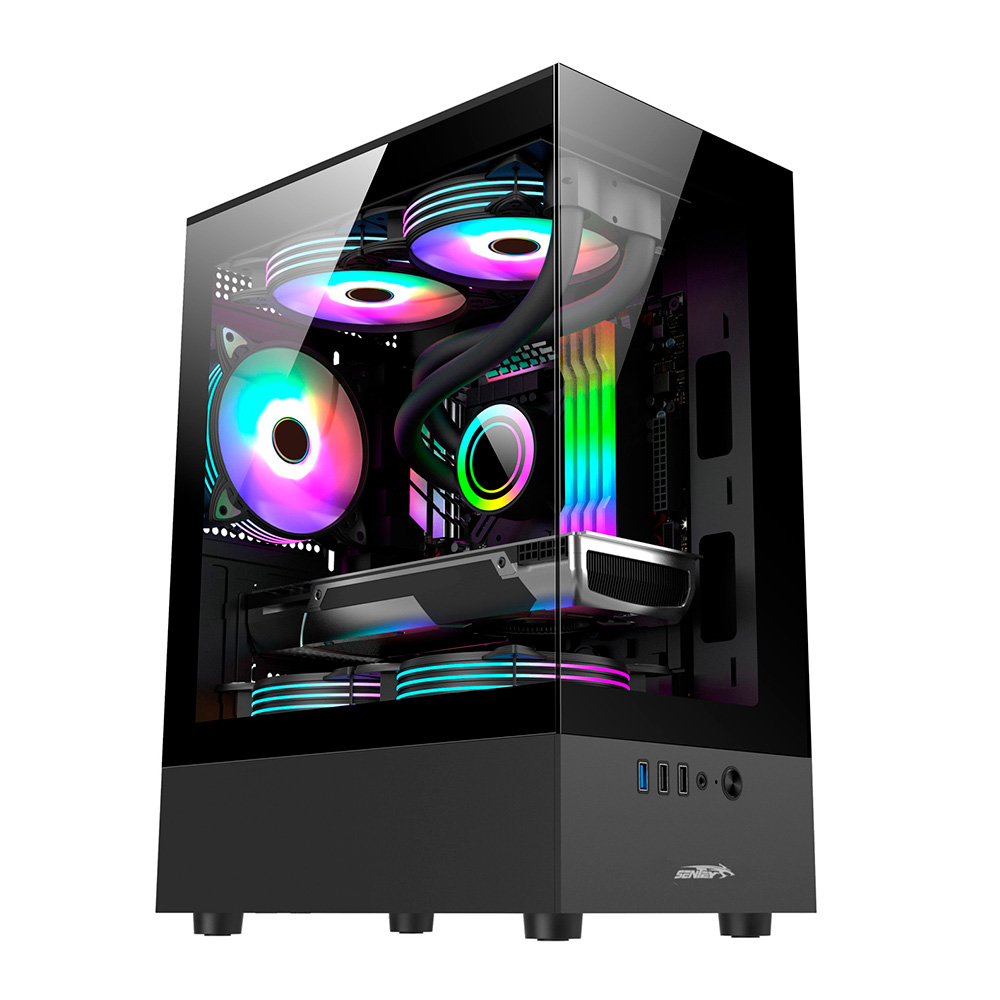Cooler Master Gamer Rig
Potencia y estilo en una estructura robusta. Con ventiladores Cooler Master ARGB, tarjeta gráfica dedicada de alto nivel y flujo de aire optimizado, esta PC asegura largas sesiones de juego sin sobrecalentamiento. La elección perfecta para quienes buscan calidad y durabilidad.
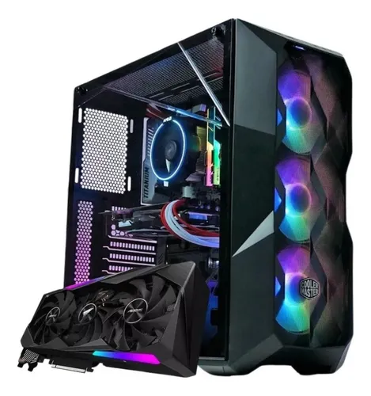PC Gamer RTX RGB Extreme
Equipado con una tarjeta gráfica NVIDIA GeForce RTX de última generación, esta PC ofrece un rendimiento excepcional para juegos AAA. Su diseño con iluminación RGB personalizable y componentes de alta gama la convierten en una opción ideal para gamers exigentes que buscan lo mejor en tecnología y estética. La máquina definitiva para entusiastas. Equipada con NVIDIA GeForce RTX, sistema de refrigeración líquida avanzado y hasta 9 ventiladores RGB sincronizados, ofrece rendimiento gráfico sin límites. Diseñada para eSports, VR y juegos 4K con máxima fluidez.
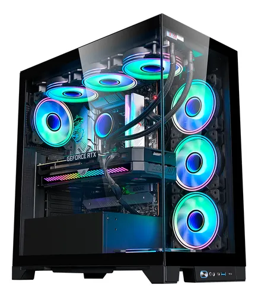White Edition Gamer: Edición Especial
Esta edición especial en blanco ofrece un diseño elegante y moderno, combinando estética y rendimiento. Con componentes de alta calidad y una tarjeta gráfica potente, es perfecta para gamers que buscan un equipo que destaque tanto en rendimiento como en estilo. Elegancia en blanco con detalles en RGB. Con chasis de vidrio templado, ventilación optimizada y hardware de última generación, esta PC combina estilo y alto rendimiento. Una opción distinta para quienes buscan destacar su setup con una estética única.
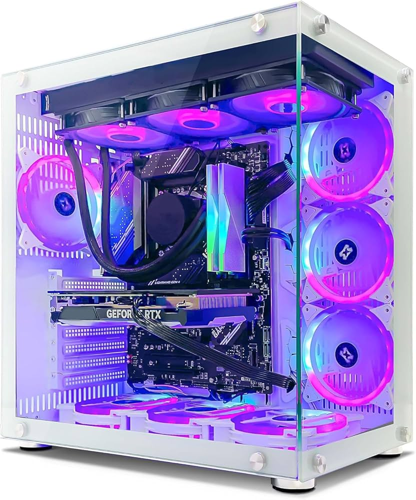PC Gamer RGB Ultimate
Con iluminación RGB personalizable y componentes de alta gama, esta PC ofrece un rendimiento excepcional para juegos AAA. Su diseño moderno y funcional la convierte en una opción ideal para gamers que buscan calidad y estilo en un solo equipo. Rendimiento superior con estilo. Equipado con procesador Intel i7, tarjeta gráfica NVIDIA RTX 3060 y 16GB de RAM, este equipo maneja juegos exigentes con facilidad. Su diseño con iluminación RGB y ventiladores silenciosos lo hacen perfecto para cualquier setup.Potencia y estilo en una estructura robusta. Con ventiladores Cooler Master ARGB, tarjeta gráfica dedicada de alto nivel y flujo de aire optimizado, esta PC asegura largas sesiones de juego sin sobrecalentamiento. La elección perfecta para quienes buscan calidad y durabilidad.
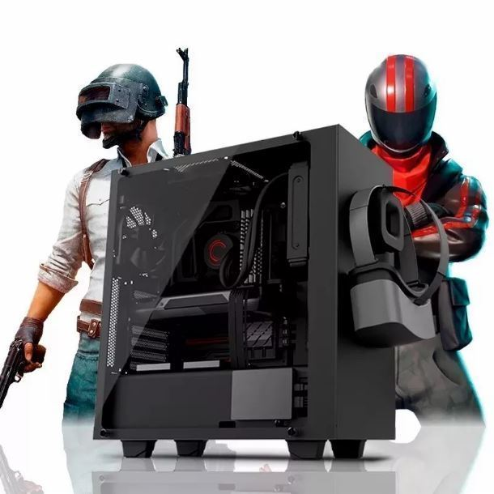PC Gamer Ryzen 7
Esta PC está equipada con un procesador AMD Ryzen 7, tarjeta gráfica dedicada y 16GB de RAM, ofreciendo un rendimiento sólido para juegos y multitarea. Su diseño compacto y eficiente la hace ideal para gamers que buscan potencia en un formato reducido. Potencia y eficiencia en un diseño compacto. Con procesador AMD Ryzen 7, tarjeta gráfica GTX 1660 y 16GB de RAM, esta PC ofrece un rendimiento sólido para juegos y multitarea. Su chasis compacto con ventilación optimizada es ideal para setups con espacio limitado. juegos incluidos con tu compra
COMBOs
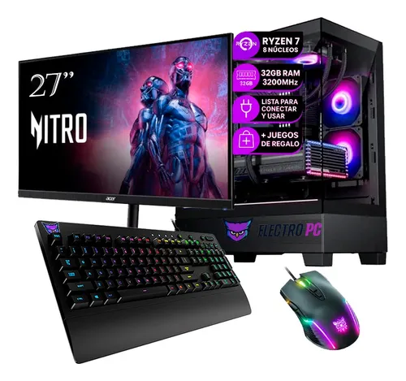Combo Gamer Completo 1
Este combo incluye una PC Gamer de alta gama, monitor Full HD, teclado mecánico RGB y mouse gamer. Todo lo necesario para una experiencia de juego inmersiva y completa. Todo lo que necesitas para empezar a jugar. Incluye PC Gamer con procesador Intel i5, monitor 24" Full HD, teclado mecánico RGB y mouse gamer. Perfecto para quienes buscan un setup completo y funcional desde el primer día. PC Gamer con Ryzen 7 de 8 núcleos, 32GB RAM 3200 MHz, refrigeración optimizada, más monitor 27” Nitro, teclado mecánico RGB y mouse gamer.
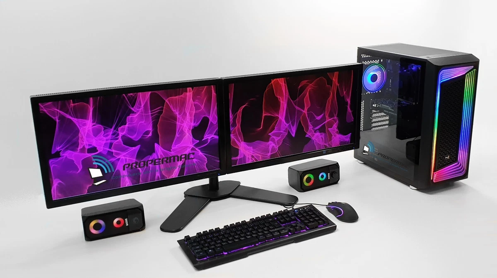Combo Gamer Completo 2
Este combo ofrece una PC Gamer con procesador AMD Ryzen 5, tarjeta gráfica dedicada, monitor 144Hz, teclado mecánico y mouse gamer. Ideal para quienes buscan un rendimiento sólido y accesorios de calidad. Rendimiento y accesorios de calidad. Incluye PC Gamer con AMD Ryzen 5, monitor 24" 144Hz, teclado mecánico y mouse gamer. Perfecto para jugadores que buscan un setup equilibrado y eficiente. PC Gamer con Ryzen 5 de 6 núcleos, 16GB RAM 3000 MHz, más monitor 24” 144Hz, teclado mecánico y mouse gamer.Torre gamer RGB + doble monitor Full HD, teclado retroiluminado y altavoces con luces. Ideal para multitasking, streaming y gaming competitivo.

Combo Gamer Completo 3
Este combo incluye una PC Gamer con procesador Intel i7, tarjeta gráfica dedicada, monitor 27", teclado mecánico RGB y mouse gamer. Una opción completa para gamers que buscan alto rendimiento y accesorios de calidad. Potencia y estilo en un solo paquete. Incluye PC Gamer con Intel i7, monitor 27" QHD, teclado mecánico RGB y mouse gamer. Ideal para jugadores que buscan un setup completo y de alto rendimiento. PC Gamer con Intel i7 de 8 núcleos, 16GB RAM 3200 MHz, más monitor 27” QHD, teclado mecánico RGB y mouse gamer.Chasis con vidrio templado, refrigeración líquida y sistema RGB. Rendimiento sólido para gaming AAA y creación de contenido.
MONITOREs

Monitor Samsung 24” Curvo FHD 100Hz
Este monitor curvo de 24 pulgadas ofrece una experiencia visual inmersiva con resolución Full HD y una tasa de refresco de 100Hz. Ideal para juegos y entretenimiento, su diseño elegante y funcional se adapta a cualquier espacio. Inmersión total con diseño curvo. Con resolución Full HD, tasa de refresco de 100Hz y tiempo de respuesta de 4ms, este monitor ofrece imágenes nítidas y fluidas. Perfecto para gaming y multimedia en un formato compacto y estilizado.
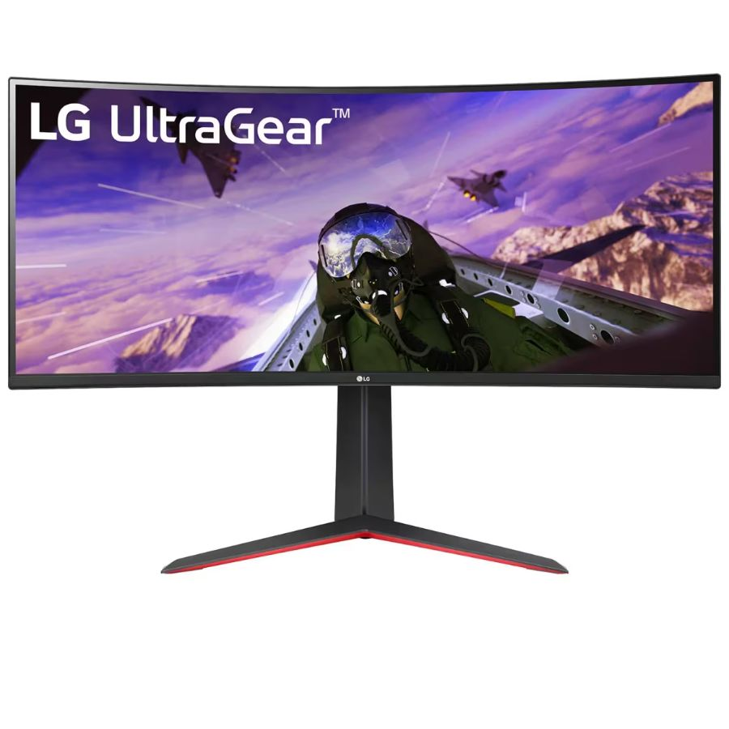Monitor LG UltraGear 34” Curvo UltraWide
Este monitor curvo UltraWide de 34 pulgadas ofrece una experiencia visual envolvente con resolución QHD y una tasa de refresco de 144Hz. Ideal para juegos y multitarea, su diseño elegante y funcional se adapta a cualquier espacio. Experiencia inmersiva con amplio campo de visión. Con resolución QHD, tasa de refresco de 144Hz y tiempo de respuesta de 1ms, este monitor ofrece imágenes detalladas y fluidas. Perfecto para gaming, edición de video y productividad en un formato panorámico.
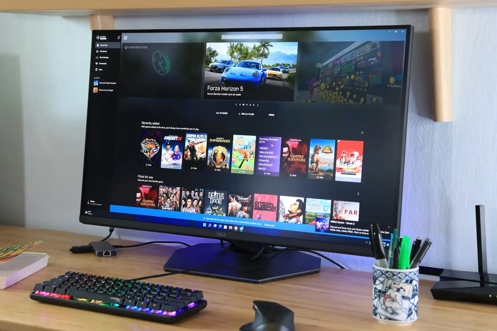Monitor Dell Gaming 27” QHD
Este monitor de 27 pulgadas ofrece una experiencia visual nítida con resolución QHD y una tasa de refresco de 165Hz. Ideal para juegos y productividad, su diseño elegante y funcional se adapta a cualquier espacio. Claridad y fluidez en cada detalle. Con resolución QHD, tasa de refresco de 165Hz y tiempo de respuesta de 1ms, este monitor ofrece imágenes claras y fluidas. Perfecto para gaming competitivo y tareas que requieren alta precisión visual.
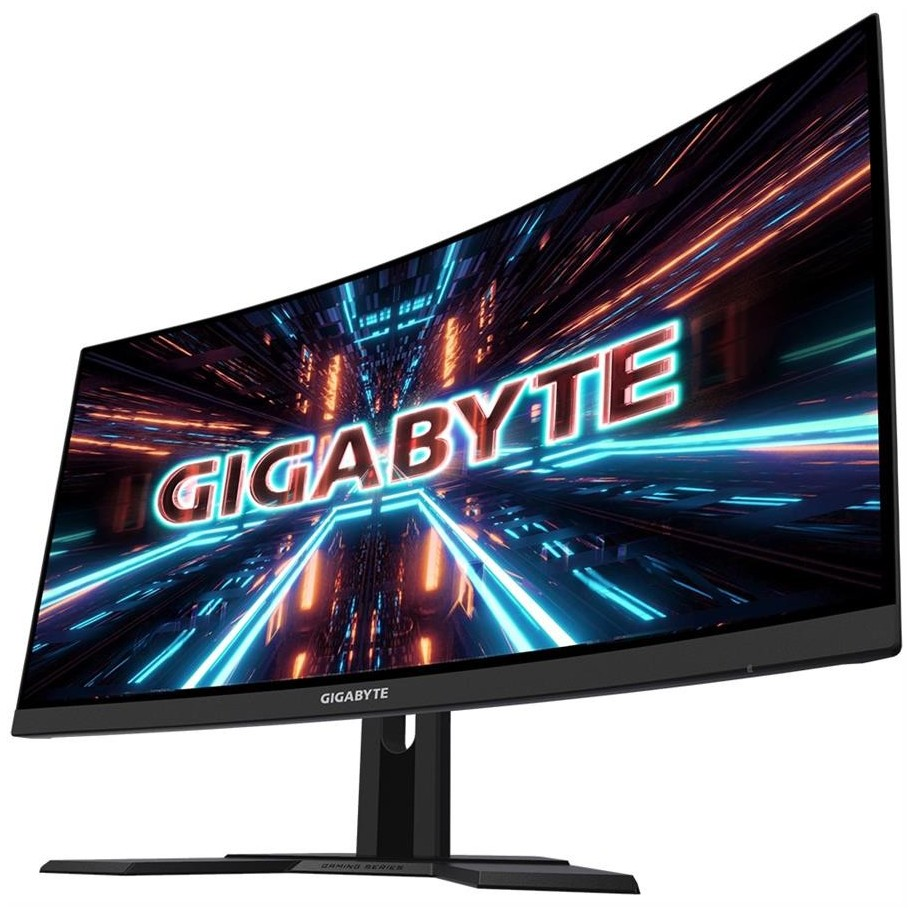Monitor Gigabyte 27” Curvo Gaming Series
Este monitor curvo de 27 pulgadas ofrece una experiencia visual envolvente con resolución QHD y una tasa de refresco de 165Hz. Ideal para juegos y entretenimiento, su diseño elegante y funcional se adapta a cualquier espacio. Inmersión total con diseño curvo. Con resolución QHD, tasa de refresco de 165Hz y tiempo de respuesta de 1ms, este monitor ofrece imágenes nítidas y fluidas. Perfecto para gaming y multimedia en un formato estilizado.
MOUSEs
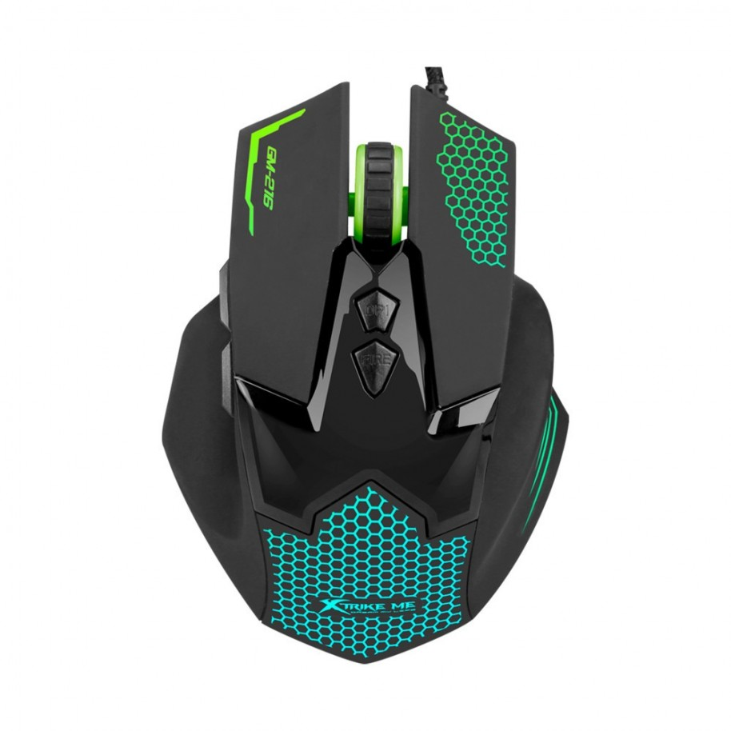Mouse Gamer Xtrike Me GM-216 Retroiluminado
Este mouse gamer ofrece un diseño ergonómico con iluminación RGB personalizable y 6 botones programables. Ideal para juegos, su sensor óptico de alta precisión garantiza movimientos rápidos y exactos. Precisión y estilo en tu mano. Con sensor óptico de 3200 DPI, iluminación RGB y 6 botones programables, este mouse ofrece un rendimiento sólido para gaming. Su diseño ergonómico asegura comodidad durante largas sesiones de juego.
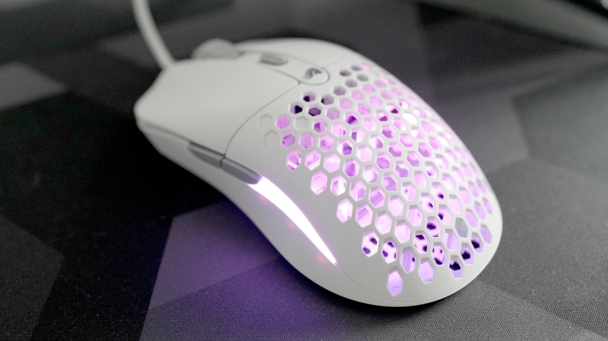Mouse Gamer Ultraliviano RGB Honeycomb
Este mouse gamer ultraliviano cuenta con un diseño de panal para reducir el peso, iluminación RGB personalizable y 6 botones programables. Ideal para juegos, su sensor óptico de alta precisión garantiza movimientos rápidos y exactos. Ligero y preciso para gamers exigentes. Con sensor óptico de 16000 DPI, iluminación RGB y diseño ultraliviano, este mouse ofrece un rendimiento excepcional para gaming competitivo. Su estructura de panal reduce el peso sin sacrificar durabilidad.
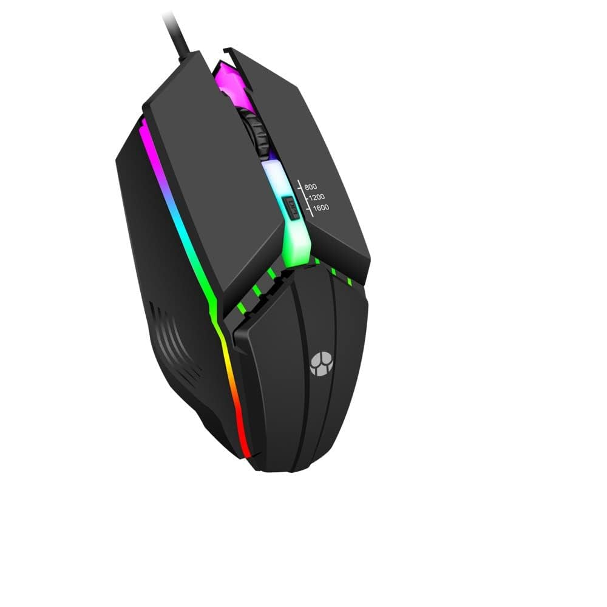Mouse Gamer RGB Programable 1600 DPI
Este mouse gamer cuenta con iluminación RGB personalizable, 6 botones programables y un sensor óptico de 1600 DPI. Ideal para juegos, ofrece un rendimiento sólido y un diseño ergonómico para mayor comodidad. Rendimiento y estilo en un solo paquete. Con sensor óptico de 1600 DPI, iluminación RGB y 6 botones programables, este mouse ofrece un rendimiento confiable para gaming. Su diseño ergonómico asegura comodidad durante largas sesiones de juego.
TECLADOs
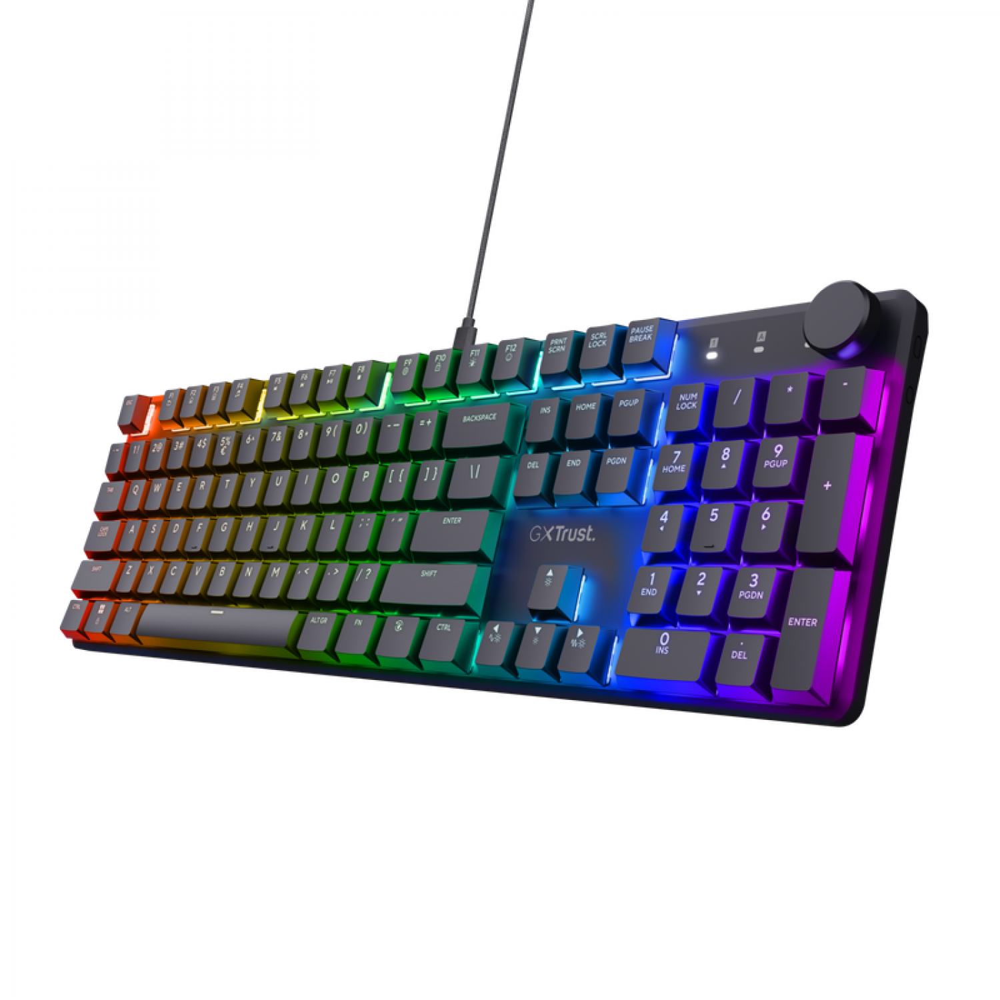Teclado Mecánico Gamer GX Trust RGB
Este teclado mecánico gamer cuenta con retroiluminación RGB personalizable, switches táctiles y 104 teclas. Ideal para juegos, ofrece una experiencia de escritura precisa y cómoda. Precisión y estilo en cada tecla. Con switches mecánicos, retroiluminación RGB y diseño ergonómico, este teclado ofrece un rendimiento sólido para gaming. Su construcción robusta asegura durabilidad y comodidad durante largas sesiones de juego.
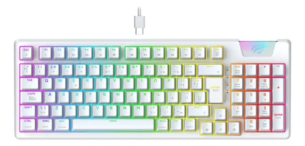Teclado Mecánico Gamer Redragon RGB
Este teclado mecánico gamer cuenta con retroiluminación RGB personalizable, switches táctiles y 104 teclas. Ideal para juegos, ofrece una experiencia de escritura precisa y cómoda. Rendimiento y estilo en un solo paquete. Con switches mecánicos, retroiluminación RGB y diseño ergonómico, este teclado ofrece un rendimiento confiable para gaming. Su construcción robusta asegura durabilidad y comodidad durante largas sesiones de juego.
AURICULAREs
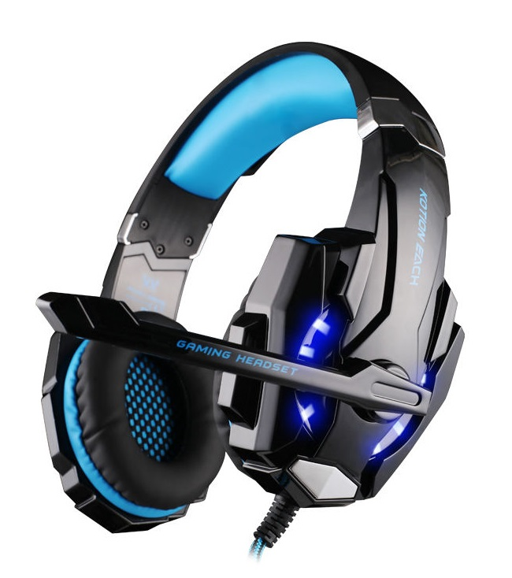Auriculares Gamer Redragon H510 Zeus
Estos auriculares gamer cuentan con sonido envolvente 7.1, micrófono ajustable y almohadillas cómodas. Ideales para juegos, ofrecen una experiencia de audio inmersiva y comunicación clara. Sonido envolvente y comodidad para largas sesiones. Con drivers de 50mm, micrófono ajustable y diseño ergonómico, estos auriculares ofrecen un rendimiento sólido para gaming. Su construcción robusta asegura durabilidad y confort durante largas sesiones de juego.
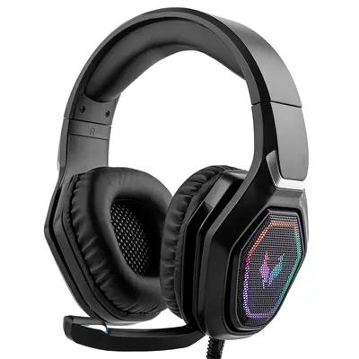Auriculares Gamer HyperX Cloud Stinger
Estos auriculares gamer cuentan con sonido envolvente, micrófono giratorio y almohadillas cómodas. Ideales para juegos, ofrecen una experiencia de audio inmersiva y comunicación clara. Comodidad y rendimiento en cada partida. Con drivers de 50mm, micrófono giratorio y diseño ligero, estos auriculares ofrecen un rendimiento confiable para gaming. Su construcción robusta asegura durabilidad y confort durante largas sesiones de juego.